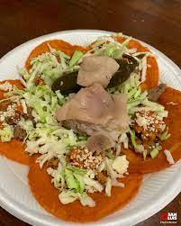

Enchiladas Rioverdenses

They are small red tortillas with beans, chorizo, potatoes, tomato sauce, and lettuce. Also
They can have a side of pickled jalapenos and pickled pork legs.
Ingredients
- 6 potatoes
- 3 tomatoes
- 1 chorizo
- 1 package of maseca
- a can of beans
Steps
- Boil the whole potatoes and carrots until they are cooked
- Remove from the water and chop the potatoes and carrots into small pieces.
- Fry the chorizo in oil until cooked well. Once it is ready,
add the carrots over low heat and then the potatoes.
Add just a little salt depending on the chorizo. Stir very well.
- Make tortillas: Cook 7 chilies and grind, for 1 package of maseca
-
Knead the maseca with water and add the ground chili to give it an orange color. Make the tortillas.